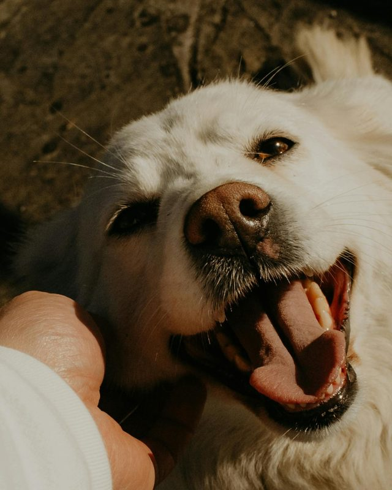
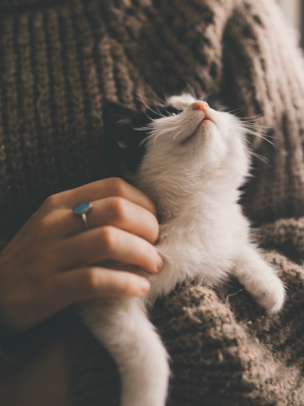
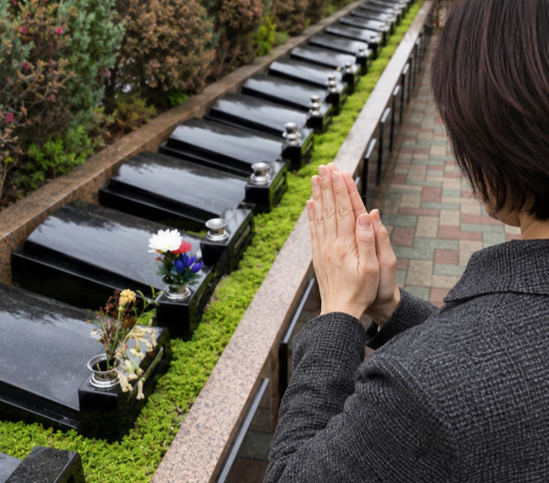
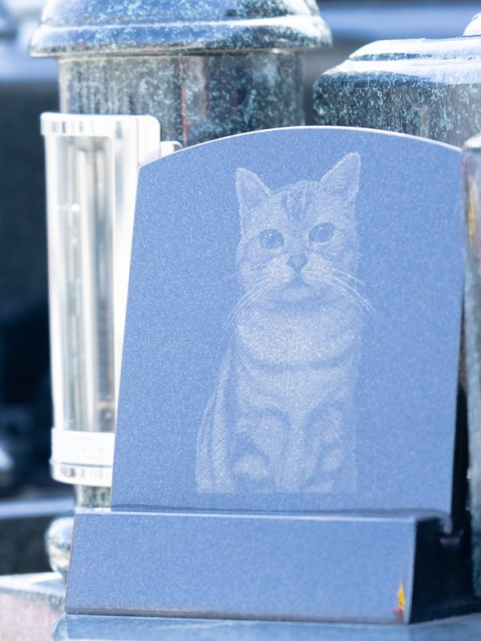
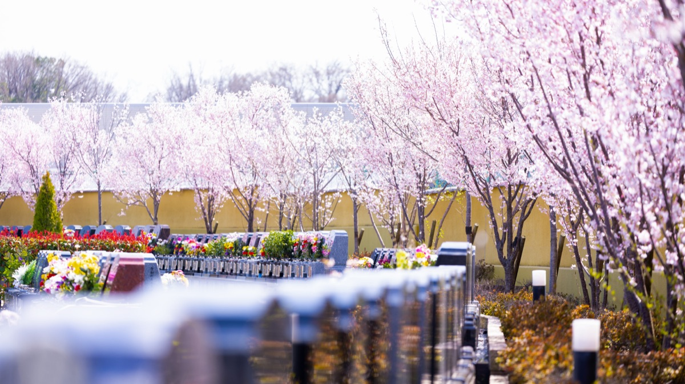
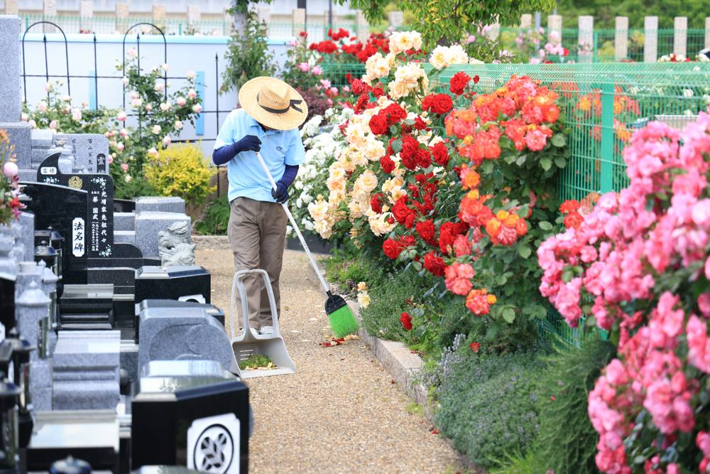
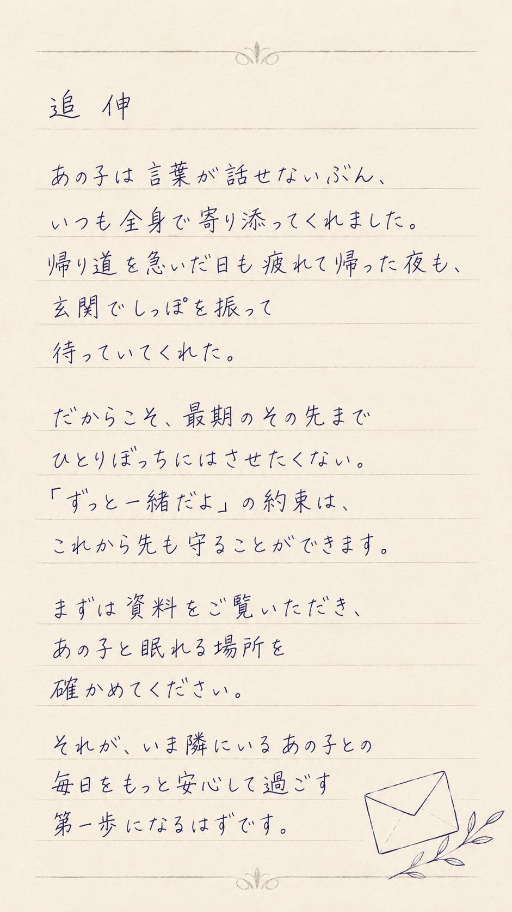

ペットと一緒に眠れるお墓
大切な小さな家族を
ひとりぼっちにさせない
最後までずっと一緒に眠れる
供養のカタチ
あなたはペットと話したい
と思ったことはありませんか？
「あの子と少しでも話せたら、、、」叶わないような願いと感じるかもしれません。けど、心のより処があるだけで、もしかすると、、、

話せているような
気がする
我が子のお墓の前で手を合わせると、一緒に過ごした思い出が溢れ出してきます。


気づけば、
あの子に話しかけている
——そんな気がするという方が、たくさんおられます。ひとりぼっちにさせたくないというご家族の想いを、私たちも同じ気持ちでお預かりしています。
「動物と一緒に
お墓に入るなんて、、、」
かつてはこのように考えられる方は少なくありませんでした。
しかし最近では、ペットは大切な家族の一員と考えられる方も増え、一緒に眠りたいと思っている人も多くなってきています。
ペットと一緒のお墓を選ぶ前に
知ってほしいこと
実は、多くの霊園には埋葬期限があります。
※期限後はご遺骨を骨壷から出し、一つの場所にまとめて埋葬・供養されます
当園は、埋葬期限なくずっと一緒に眠り続けられます。
他の子の遺骨と混ざることに
抵抗がある家族だったから、
ずっと一緒に眠り続けたい
——そう思い、後悔のない供養を考える方に当霊園は選ばれています。

ご家族さまの想いに応える
霊園でありたい
私たち美原東ロイヤルメモリアルパークは、単なるお墓を建てることをお客様に提供しているわけではありません。故人やご先祖様のお墓参りを、家族みんなで楽しめる墓地にしたいと考えています。
園内の紹介動画をご覧ください。
心から明るく手を合わせられる
ための3つのサービス
花や緑が溢れる
四季折々の庭園空間
「霊園」と聞くと気が重くなる方もいます。ここは花と緑が咲き誇り、四季で表情を変える場所。季節の自然に癒されながら、明るい気持ちでお参りいただけます。

毎日の行き届いた清掃
墓石を探し、枯葉の掃除から始める——そんな負担はありません。園内は毎日徹底して清掃。いつ来ても、あの子をきれいな場所でお迎えします。

無料送迎・バリアフリー対応
何歳になっても通えるよう、駅からの無料送迎とバリアフリーを整えています。足腰が弱っても、家族に負担をかけずご自身で会いに行けます。※無料送迎は指定駅から・要予約
ペットを見送ったご家族の声
16年連れ添った子を見送ったあと、「この子だけ別の場所」がどうしても受け入れられませんでした。一緒に眠れるお墓があると知ったとき、夫婦で涙が出ました。今は「先に行って待っててね」と声をかけられます。
ペット霊園と人のお墓の二か所にお参りするのは体力的にも心にも負担でした。ここなら一度にみんなに会える。園内が明るくてお参りというより「会いに行く」感覚です。
※掲載内容はイメージです。実際のお客様の声の取得後に差し替えてください。
あの子と眠れる区画をまずは資料でご覧ください。
区画の写真・料金・園内の雰囲気がわかる資料を無料でお届けします。
無理な営業はいたしません 資料請求やご見学のあとに、しつこくお電話や訪問をすることはありません。ご家族のペースで、ゆっくりお考えください。
お参りに行けば
あの子がそこにいる。
晴れた日に花を持って霊園へ。
墓前に手を合わせれば
目の前に大切なあの子がいる。
「元気にしてた？」「みんな一緒だよ」
いつかご自身がその時を迎えたあとも家族全員が同じ場所に揃い続ける。それは遺されるご家族へのいちばんやさしい贈りものになります。
一歩を踏み出した方の声
「まだ早いかな」と迷いましたが、資料を見て見学して「ここならあの子と一緒にいられる」と思えたら心がすっと軽くなりました。決めたことで、いま元気に隣にいるこの子との毎日をもっと大切にできるようになった気がします。もっと早く知りたかったです。
※掲載内容はイメージです。実際のお客様の声の取得後に差し替えてください。
「ずっと一緒だよ」の約束をここから。
資料請求・ご見学は無料です。
大切な家族との「これから」を安心して考えられるお手伝いをいたします。
無理な営業はいたしません 資料請求やご見学のあとに、しつこくお電話や訪問をすることはありません。ご家族のペースで、ゆっくりお考えください。
